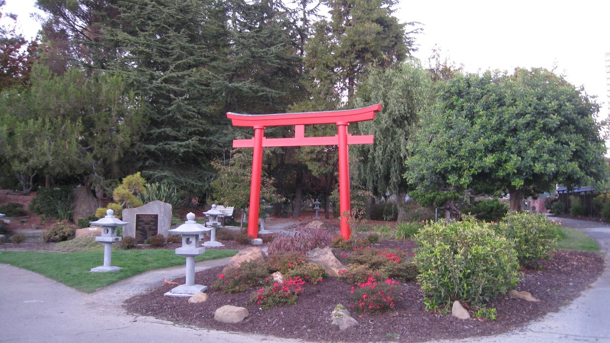

Embedded Files
Now accepting applications for Summer 2027 High School Exchange to Japan AND Summer 2027 APCC Exchange to Japan.


The original Torii Gate was a gift to the City of Oakland in 1969 from the Junior Chamber of Commerce of Fukuoka, Japan to commemorate the 7th anniversary of its sister city relationship with the City of Oakland. Over the years, the Torii Gate became so deteriorated that it became necessary for the city to remove it.
1999OFSCA began a fund-raising campaign to rebuild the Torii Gate. We raised approximately $32,000 and have spent at least 2000 volunteer hours on this project. the gate was built by a skilled Japanese craftsman, Mr. Hiroshi Sakaguchi in the traditional Japanese manner.
September, 2002OFSCA celebrated its 40th anniversary as a sister city with Fukuoka, Japan. To commemorate our 40th anniversary, a 65-person delegation from Fukuoka, Japan came to Oakland to participate in the festivities. At that time the Torii Gate was completed and unveiled. We dedicated the Torii Gate in memory of our late councilman, Frank H. Ogawa.
October, 2004OFSCA installed a bronze dedication plaque affixed to a large stone to honor the donors of the Torii Gate.
2005OFSCA member and landscape designer, Peter Bowyer volunteered his time to draw up a long-range planting plan for the Torii Gate area that has been approved by the Oakland Parks Commission. OFSCA is a member of the East Bay Garden Club and we hold quarterly clean up volunteer work days at the Gate.
2007OFSCA met monthly to rid the area of weeds. OFSCA dug trenches and installed an irrigation syster and timers. We prepared the area for a gravel path that leads under the Torii Gate. In addition, we donated and installed a park bench that is dedicated in memory of our long-standing member and former OFSCA President, Tony Yokomizo. OFSCA arranged for volunteers from Boy Scout Troop 203, Lake Merritt Pruning Club and various teen group volunteers to help with this project. Over 500 volunteer hours have been logged in.
201250th Anniversary - OFSCA installed 10 Japanese stone lanterns to enhance the Torii Gate garden. Over 200 people enjoyed the 50th festivities and participated in the un-veiling of the lanterns.
OFSCA has a master garden plan for the Torii Gate area that was approved by the Oakland Parks Commission and we are committed to maintaining the upkeep and beautification of the area to ensure that the Torii Gate along with the surrounding area can be enjoyed for years to come.
OFSCA is a member of the East Bay Garden Club and holds quarterly clean up days at the Gate site. Lakeside Park is open to the public free of charge. Every person coming to the park will have the opportunity to benefit from and enjoy the beautification of the area.
View our online photo album of our Torii Gate and visit the Torii Gate page and the Map & Directions page on the Gardens at Lake Merritt website.
Page updated
Report abuse